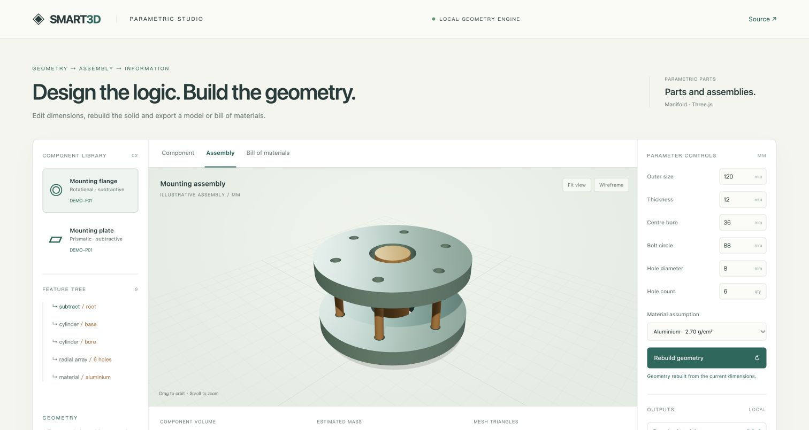
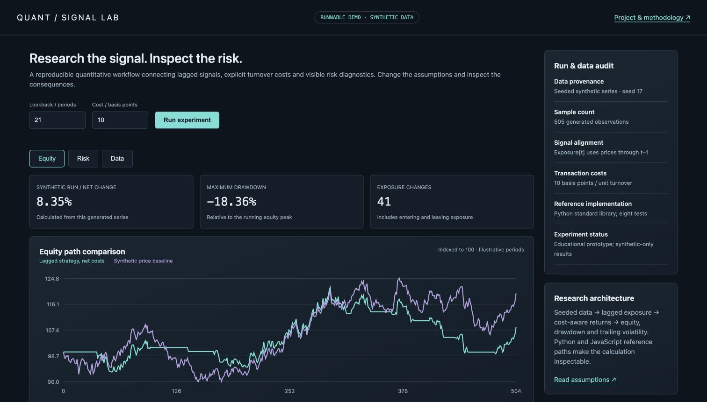
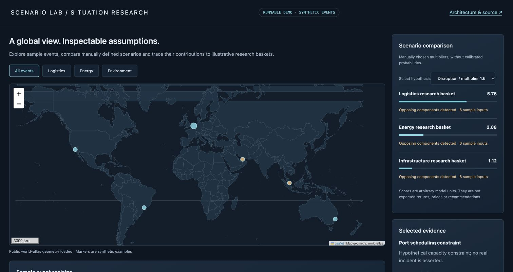
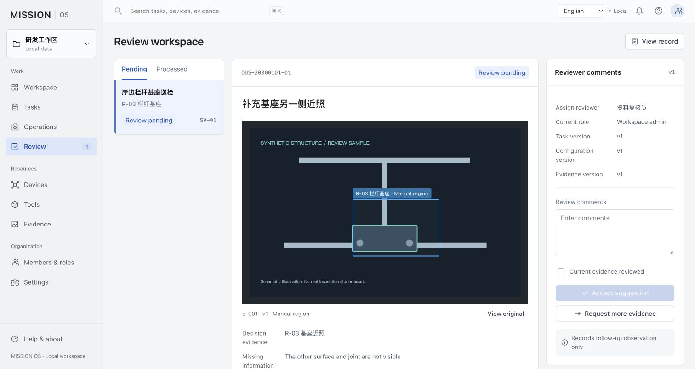

01 / COMPUTATIONAL DESIGNFLAGSHIP DEMONSTRATOR
SMART3D
Design intent, realised in geometry. Connect parameter-driven solids, reusable assembly instances, structured BOM information and portable model outputs.
Executable work across parametric design, quantitative research, situational awareness and engineering workflows. Explore the behaviour. Follow the implementation. Inspect the evidence.
Consistent project notes, direct demonstration links and inspectable public examples. Original private research remains outside the public package.

Design intent, realised in geometry. Connect parameter-driven solids, reusable assembly instances, structured BOM information and portable model outputs.

Research the signal. Inspect the risk. Follow reproducible data through lagged exposure, explicit turnover costs and equity/risk diagnostics.

See the context. Trace the scenario. Connect geographic context with explicit hypotheses, signed contribution attribution and opposing-effect detection.

Operational progression with inspectable evidence. Explore task preparation, resource context, versioned records and reviewer decisions.
Numerical models with visible assumptions. Data retrieval with explicit failure paths. Inspect pressure-balance solving, thermal parameter sweeps and resilient cache behaviour.
python3 thermal_model.py python3 resilient_cache.py python3 -m unittest -v test_algorithms.py
| Project | Computational / interaction evidence | Boundary |
|---|---|---|
| SMART3D | 75 selected source tests · 12 demo checks · export readback | Named computational paths |
| Quant Signal Lab | 8 Python tests · 4 cross-language parity configurations | Synthetic series |
| Scenario Intelligence Lab | 7 computation checks · score/contribution UI checks | Manual weights, arbitrary units |
| Mission Review Lab | Workspace and review-screen browser checks | Frontend workflow |
| Engineering Computation | 11 Python checks | Numerical references, fake providers |
Computational, browser and file checks are distinct from full deployment or production validation. Read the validation matrix ↗
Use the reviewer guide to choose a path, then follow each project's source, methodology and evidence.
AI-assisted demonstrators with synthetic fixtures. Personal records, credentials and original core research are excluded. Content and dependency inventory ↗